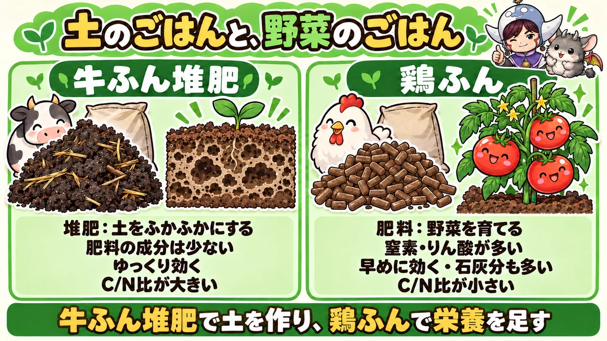

Cattle-manure compost or chicken manure? 🐄🐔
🐄 "Is cattle-manure compost a fertiliser, or is it for the soil?"
🐔 "Can I use chicken manure in the same amount as compost?"
🌱 "I added both, but my vegetables went soft and leafy. What went wrong?"
Hello, I'm Eiko. Eight years of growing vegetables organically and without pesticides, and a teaching licence in science.
The bags of cattle-manure compost and fermented chicken manure often sit together in the garden centre. Both come from animals, but they do different jobs. Use them as if they were the same and the soil can become unbalanced, or the crop can grow badly. This guide covers the difference, the label, amounts, timing, application, overuse, storage and the way each works in the soil.
Where you are: the months and examples here follow a home vegetable garden in central Japan. Shift the calendar to your own growing season and first frosts. “Cattle-manure compost” means a well-rotted, composted cattle manure product; “chicken manure” means the treated, bagged product sold as a fertiliser.
The essentials: cattle-manure compost is mainly a soil improver and works slowly; chicken manure is a nutrient fertiliser and works sooner. Read the bag, start modestly, spread over the whole bed, mix it in at least two weeks before planting, and remember that chicken manure already contains a lot of lime. Use the compost to build the soil and the manure to feed the crop.
① At a glance: the two materials
Cattle-manure compost
- What it is: compost — something that builds the soil
- Look and feel: dark, moist and crumbly, often with straw or sawdust
- Nutrients: low; nitrogen is around 1%
- Speed: slow, breaking down in the soil over years
- Main job: improve crumb structure, drainage, water-holding and air space, and feed soil life
- When: soil preparation at least two weeks before planting
- Guide amount: about 2–3 kg per m²
Fermented chicken manure
- What it is: fertiliser — something that feeds the vegetable
- Look and feel: brownish pellets or powder, generally loose and dry
- Nutrients: high; nitrogen is often 3–4%, with plenty of phosphate and lime (calcium)
- Speed: relatively quick; in warm weather its first flush may fade after about a month
- Main job: supply nutrients
- When: as a base fertiliser before planting or as a top-up while plants grow
- Guide amount: about 100–200 g per m² as a base fertiliser, unless the bag says otherwise
In one sentence: cattle manure is “food for the soil”; chicken manure is “food for the crop”. Build the soil with the first and feed the vegetable with the second.

What this diagram says （図解の文字）
- Soil food and vegetable food
- "Cattle-manure compost" — "Compost: makes soil crumbly" ／ "Few fertiliser nutrients" ／ "Works slowly" ／ "C/N ratio is high"
- "Chicken manure" — "Fertiliser: grows vegetables" ／ "Lots of nitrogen and phosphate" ／ "Works sooner; lots of lime too" ／ "C/N ratio is low"
- "Build soil with cattle-manure compost; top up nutrients with chicken manure"
② Measure before you spread
Find the bed area
Most labels give an amount per square metre. Measure the length and width of the bed and multiply them. A bed 3 m long and 1 m wide is 3 m².
Work from the bag weight
A 20 kg bag of cattle-manure compost, used at 2–3 kg per m², covers roughly 7–10 m². This gives you a practical idea of how many bags the bed needs.
Weigh a bucket once
Put the material in your bucket or measuring cup and weigh it once on kitchen scales. Later you can use “so many buckets” or “so many cups” as a rough measure. Compost weighs differently when it is damp, so treat this as a guide, not a laboratory value.
Start below the maximum
With a new bed or a new product, begin a little below the guide amount and watch the crop. You can add a little feed later; you cannot easily remove an excess already mixed into the soil.
③ Compost and fertiliser do different jobs
Compost makes a root-friendly soil
Compost is made by piling and fermenting organic matter such as straw, fallen leaves and animal manure. In the soil it feeds microbes. Their activity helps small soil particles join into crumbs. Crumbly soil has spaces for water and air, drains excess water while holding some moisture, and lets roots spread. Compost is not mainly a direct meal for the vegetable; it prepares a place where the vegetable can grow.
Fertiliser feeds the plant
Fertiliser supplies nutrients such as nitrogen, phosphate and potash. It dissolves comparatively quickly and roots take it up. It does not, by itself, make hard soil crumbly.
You need both jobs
A good bed needs a root-friendly structure and a supply of nutrients. Compost alone may not supply enough feed; fertiliser alone does little to build the soil. Think of fertiliser as the protein in a meal and compost as the vegetables and fibre: relying on just one leaves the meal unbalanced.
④ Read the label
Nitrogen, phosphate and potash
Bags usually show the percentage of nitrogen, phosphate and potash.
- Nitrogen: leaves and stems
- Phosphate: roots, flowers and fruit
- Potash: roots and a sturdy plant
A higher number means more of that nutrient in the product.
C/N ratio
Some labels show a C/N ratio, or carbon-to-nitrogen ratio. A small ratio, up to about 10, means relatively more nitrogen and faster breakdown: it behaves like a fertiliser, as chicken manure does. A large ratio, above about 15–20, means more carbon and slower breakdown: it behaves more like a soil-building compost, as cattle-manure compost does. Between the two, at about 10–15, sits an intermediate group that does a bit of both; pig manure falls around here.
The same name does not guarantee the same contents
Two bags labelled chicken manure or cattle-manure compost can differ because of the bedding, the mixing and the fermentation process. Always read the actual bag before applying it.
Some nutrients may not be printed
Chicken manure also contains considerable calcium and magnesium. A nutrient below the labelling threshold may not appear on the bag, so remember that chicken manure can add a lot of lime even when the lime figure is not prominent.
⑤ How to use cattle-manure compost
Choose well-rotted material
Good compost is dark, loose and has little unpleasant smell. A sticky product with a strong smell may not be fully fermented. Press the bag: a moist, springy, crumbly feel is a better sign.
Amount and timing
Use about 2–3 kg per m². A new bed or a hard soil may need a little more in its first year, then less in the second and third years as the soil improves. Mix it in at least two weeks before planting so it can settle and so roots are less likely to be damaged.
Spread it across the whole bed
- Mark the area where the bed will be.
- Spread the compost evenly from edge to edge; do not leave a heap in the middle.
- Mix it well with soil using a hoe or spade.
Use the hoe from top to bottom
Bring the hoe down into the soil and break it there. Pulling it towards you or sideways drags the evenly spread compost into a strip and leaves the rest of the bed short.
Why the edges matter
Within about a month after planting, roots can reach from the plant towards the bed edges. If compost and fertiliser sit only in the centre, growth may start well and then stall when roots reach soil with little nutrition.
Do not keep adding large amounts
Cattle-manure compost is low in fertiliser nutrients, but it is not nutrient-free. Material that has not yet broken down can accumulate if large amounts are added every year. Do not empty a spare bag onto the bed; follow the guide amount.
Watch for immature compost
Grass seeds can pass through cattle and remain in manure. Properly heated fermentation kills them; immature compost can bring weed seeds into the bed. It can also damage roots while it decomposes and can make radishes or carrots fork. Choose well-rotted, low-smell material.
Vary the compost sometimes
Cattle-manure compost is useful, but occasionally changing to bark compost or leaf mould is one way of giving soil life a wider range of materials. Where several composts are already used, about half the cattle-compost guide amount may be enough.

What this diagram says （図解の文字）
- How much to add and how to add it
- "Measure the bed" ／ "Spread evenly to the edges" ／ "Hoe from top to bottom"
- "At least two weeks before planting"
- "Per 1 m²: 2–3 kg cattle-manure compost; about 100 g chicken manure"
- "Start with a little less. Add a top-up if needed"
⑥ How to use chicken manure
Choose a treated product
Bagged chicken manure may be fermented, merely dried, or heat-treated. Fermented chicken manure is often the easiest home-garden form because it is less smelly and easier to handle.
Pellets and powder
Large pellets break down more slowly. Powder acts sooner. Pellets are easy to spread and less likely to blow away.
As a base fertiliser
Spread it evenly over the bed with the cattle-manure compost and mix it into the soil. About 100–200 g per m² is a guide, but the product label takes priority. Crops that feed heavily, such as sweetcorn and taro, may need a little more.
As a top dressing
While the crop is growing, sprinkle it in a ring a little away from the stem. Mix it lightly into the surface or cover it with soil.
Do not leave it on the surface
Uncovered manure can attract insects by its smell. Mix in a base dressing and cover a top dressing with soil.
Fruiting crops
Because chicken manure contains plenty of phosphate, it suits tomatoes, aubergines, peppers and cucumbers. Its calcium content is also said to help prevent blossom-end rot in tomatoes when calcium is short; it is not a reason to apply extra manure indiscriminately.
⑦ The different chicken-manure products
Never use fresh manure
Fresh manure from a hen house can contain pathogens and ammonia that burns roots. Use a commercial product that has been fermented, dried or otherwise treated.
Inexpensive fermented manure
Many inexpensive bags have been fermented and dried to reduce pathogens, but some ammonia and smell can remain. If you plant immediately, gases released in the soil may damage roots. Leave about two weeks between application and planting.
Thoroughly fermented manure
Manure fermented for longer with rice hulls, sawdust or similar bedding is usually less smelly. Besides feeding the crop it may add a little organic matter, but it can cost more.
Charred manure
High-temperature products such as charred chicken manure have little smell and no living pathogens after heating. Some nitrogen is lost, while phosphate, potash and lime become relatively prominent. It is strongly alkaline, so avoid excess.
⑧ Top-dressing step by step
When the plants are small
- Make a ring of manure a little away from the stem.
- Begin with just under a handful per plant and follow the bag.
- Cover it with a thin layer of soil or mix it lightly.
This spreads the feed around the plant's root area.
When the plant is large
Once leaves spread out, make a shallow trench between plants or on the shoulder of the bed with a hand trowel. Put the manure in, then return the soil.
Keep it shallow
Deep burial can trap gases released during decomposition near the roots. A shallow application is safer; rain and watering still carry nutrients down gradually.
With mulch
Put the manure through the planting hole, or make a small hole in the mulch a little away from the stem. Fill it with manure and soil, then water so it settles into the bed.
⑨ Combining the two
The basic combination
Before planting, use cattle-manure compost to build the soil and chicken manure to add nutrients. A guide is 2–3 kg of compost and about 100 g of chicken manure per m², mixed in at least two weeks before planting.
A new or hard bed
Where the ground has not been a bed before, or has become compacted, add a little more compost in the first year and dig deeper to loosen it. Reduce the amount over the second and third years as the soil changes.
A well-built bed
In soil made crumbly by years of compost, reduce the cattle compost or omit it for that year and use chicken manure alone as the base feed if the crop needs it.
Hard or sandy soil
Hard soil, sandy soil where rain washes nutrients away, and soil without stable crumbs need the compost. Chicken manure alone will not make such soil crumbly and its nutrients may wash through quickly.
Plan the top dressings
In warm weather a base dressing of chicken manure may fade after about a month. For summer crops, begin small top dressings when fruit starts to form and repeat every two or three weeks. For autumn and winter crops, a first top dressing about two weeks after planting and roughly monthly thereafter is a guide. Cattle-manure compost is rarely useful as a top dressing.
When crops follow one another
Fertiliser can remain after a spring or summer crop. If the previous crop grew strongly with dark leaves, reduce the next base dressing.
Other fertilisers
Oil-cake meal is high in nitrogen and suits leafy crops. Too much nitrogen early can make tomatoes leafy with fewer fruits, so chicken manure is often a better centrepiece for fruiting crops. Chicken manure can be low in potash; a little wood ash is one way to add it.
⑩ Preparing a bed before planting
- Clear weeds and old roots. Remove weeds and thick roots from the area.
- Spread both materials. Spread cattle compost and chicken manure from edge to edge. Mixing them in a bucket first can reduce patches.
- Dig and mix. Bring the hoe down from above and mix to about 20–30 cm deep.
- Water if dry. If the soil is bone dry, water after mixing so microbes can start working and the material settles in.
- Wait at least two weeks. Once the soil has settled, make the bed, add mulch if needed and plant.
If you need lime because the soil is very acid, use less than usual: chicken manure already adds lime.
⑪ Mistakes caused by too much
Using chicken manure as if it were compost
“Fermented” and its display beside compost can make chicken manure look like a soil improver. It is a concentrated fertiliser. Too much makes vegetables soft and stretched, and soft growth is easier for pests and disease to damage.
Adding a full dose of lime as well
Chicken manure already contains lime. Adding the usual dose of garden lime on top can push the soil alkaline and upset the balance of other nutrients. Reduce the lime when using chicken manure.
Using lime and chicken manure for potatoes
Potatoes prefer slightly acid soil. Alkaline conditions encourage scab, the corky skin disease. Do not add lime to a potato bed, or use very little, and do not overdo chicken manure. Test the soil first if you are unsure.
Adding large amounts of cattle compost every year
It takes years to break down, so nutrients can build up. If leaves become excessive or pests increase after several years, review the compost amount.
Putting it only in the centre
Roots eventually reach the untreated edges and growth can stall. Spread to the edges.
Pulling the hoe towards you
The evenly spread material is dragged into one strip. Bring the hoe down from above.
Planting immediately after chicken manure
Gas released in the soil can injure new roots. Wait about two weeks.
What this diagram says （図解の文字）
- Mistakes from too much, and storage
- "A large amount of chicken manure, thinking it is compost" ✗
- "Lots of lime and lots of chicken manure" ✗
- "Potato scab" ✗
- "Keep it out of the rain" ／ "Close the bag and keep it somewhere dry"
- "When using chicken manure, use less lime"
⑫ Storage and leftovers
Check the bag when buying
Avoid a torn bag or one left in rain with water inside. Damp material is more likely to smell or mould after you take it home.
Keep rain out
Both products can clump or mould when wet. Wet chicken manure can start fermenting, smell strongly and lose nutrients. Close the bag firmly and keep it under cover; a lidded container is safer.
Buy what you can use
Cattle compost is mainly used during soil preparation, so a small home bed rarely needs many large bags. Unused bags become a storage problem.
Smell often means damp
A strong chicken-manure smell often means it has absorbed moisture. Avoid bags that were rained on at the shop.
Use leftovers
Keep leftover cattle compost dry for the next bed, or use a thin layer around plants as protection from drying or mud splash. It can also help refresh old container soil. Chicken manure can be used gradually as top dressing; keep it dry, and break up clumps before use.
⑬ Seasons change the speed
Warm weather
Microbes work actively from spring into summer, so chicken manure starts sooner and may fade after about a month. Top up summer crops as that first feed fades.
Cold weather
From autumn into winter, microbes slow down. Both materials break down more slowly, so chicken manure takes longer to act but lasts longer. Finish autumn and winter bed preparation before the cold and top dress early.
Winter preparation
You can mix cattle compost into a bed during winter for a spring crop. It continues to break down slowly and is settled into the soil by spring.
⑭ Crop by crop
- Tomatoes, aubergines, peppers and cucumbers: build the soil with cattle compost; use chicken manure as restrained base feed and top dressing. Tomatoes dislike excess early nitrogen, so feed more once fruit starts.
- Sweetcorn and taro: heavy feeders; build the soil well and use a little more chicken manure.
- Cabbage, Chinese cabbage and broccoli: use both materials; a little high-nitrogen oil-cake meal can be added for leafy growth.
- Potatoes: keep lime and chicken manure modest; cattle compost is the safer soil-building base.
- Radishes and carrots: use well-rotted compost and mix it in at least two weeks before sowing, so lumps and immature material do not fork the roots.
- Onions and garlic: prepare the bed with both, but finish winter top dressing with organic feed such as chicken manure by about the end of January (with a quick-acting compound fertiliser, by about mid-February for early varieties and early March for mid- and late-season ones); excess spring feed can bring disease or poor bulb swelling.
- Strawberries: make a crumbly bed with cattle compost and a restrained base dressing of chicken manure at least two weeks before planting; strawberry roots are sensitive to fertiliser.
- Beans and peanuts: their root microbes fix nitrogen, so keep feed modest. Too much chicken manure gives leaves without enough fruit.
⑮ Through the year (central Japan)
- February–March: prepare beds for summer crops at least two weeks before planting.
- April–May: plant summer crops; begin chicken-manure top dressing when fruit starts.
- June–August: top dress summer crops a little every two or three weeks.
- August–September: prepare beds for autumn and winter crops.
- September–November: top dress early, before cold slows the manure.
- December–January: keep leftover bags dry and under cover.
⑯ Where advice differs
Can chicken manure replace compost?
Many guides say no: it is a fertiliser, not a substitute for a soil-building compost. Others note that it can feed microbes a little. If the aim is crumbly soil, use cattle compost or another compost and treat chicken manure as the nutrient part.
Does cattle compost correct acid soil?
Many products are neutral to mildly alkaline and may gently soften acid soil, but the effect is mild. For strongly acid soil, test it and use lime deliberately.
Can potatoes have chicken manure?
Some gardeners avoid it because its lime can encourage scab; others use it where a soil test shows the soil remains acid. Test first, or choose a lower-lime fertiliser if you are worried.
Is the bag rate enough?
Some people say bag rates are conservative; excess nutrients and lime are the greater risk. Start at the labelled rate and adjust the next crop after watching leaf colour and growth.
⑰ Questions
If I buy only one, which should it be?
Choose cattle-manure compost for a bed that still needs soil structure. Choose chicken manure when the soil is already good and only nutrients are needed. A first-time bed benefits from both.
Can I plant straight after cattle compost?
Well-rotted material is often gentle enough, but mixing it in at least two weeks before planting is safer.
Can I store the two mixed together?
Mix them immediately before spreading if you like, but do not store the mixture. Damp compost can make chicken manure absorb moisture, ferment, smell and clump. Store them separately.
How long until cattle compost becomes soil?
It breaks down slowly over several years. Build the soil little by little and think in a three-year view rather than expecting a dramatic change in one year.
What if the chicken manure smells?
More thoroughly fermented material smells less. Mix it in or cover it straight away.
What about a balcony container?
It can be used, but a container holds little soil, so chicken manure can act too strongly. Use very little and check whether the bought potting mix already contains fertiliser. If smell is a problem, choose a low-smell, thoroughly fermented or charred product, cover it immediately, or use a non-smelly manufactured fertiliser or liquid feed.
What about bark compost and leaf mould?
Both are mainly soil improvers with even fewer fertiliser nutrients. Cattle compost contributes a little nutrient as well as structure.
Why did weeds increase after compost?
Immature compost may have carried weed seeds. Also, improved soil helps weeds grow. Choose well-fermented compost and pull weeds while small.
What about horse or pig manure?
Horse-manure compost is another soil-building compost. Pig manure sits between cattle compost and chicken manure in nutrient strength. Read the C/N ratio and the actual bag before deciding whether to treat it as compost or fertiliser.
What if I added too much chicken manure?
If nothing is planted, delay planting, mix in other soil or cattle compost to dilute it, and water the dry soil well. If a crop is already planted, stop top dressing and watch the leaves and growth.
⑱ The science: what happens in the soil 🔬
Why cattle compost makes soil crumbly
Cattle eat grass, so fibres remain in their manure. Soil microbes slowly break those fibres down. Sticky substances made during that process bind fine particles into crumbs. Large spaces between crumbs carry water and air; small spaces inside them hold water. That is the structure that feels crumbly while still draining well.
Why chicken manure feeds quickly
Chickens eat nutrient-rich grain and excrete faeces and urine together. Their manure therefore contains plenty of nitrogen and phosphate. It contains less fibre, so it breaks down faster and releases nutrients to roots. Its low C/N ratio reflects more nitrogen and less carbon-rich fibre.
Why C/N ratio changes the job
Microbes use carbon for energy and nitrogen to build their bodies. In low-C/N chicken manure, nitrogen is plentiful, so decomposition moves quickly and spare nitrogen becomes plant feed. In high-C/N material, nitrogen is scarce, so decomposition is slower while microbes make the sticky materials that build crumbs. If very high-C/N material is added in huge amounts, microbes can temporarily use soil nitrogen and leave less for vegetables.
Why fermentation matters
During fermentation, microbial activity heats the pile. Heat kills pathogens, weed seeds and insect eggs, and decomposition reduces smell and root-burning substances. If an immature product is put straight into soil, heat and gases can be released around roots. That is why both materials should be well treated and given time to settle before planting.
Why chicken manure contains lime
Hens need calcium to make eggshells, and feed often contains shell or another calcium source. Much of that calcium remains in the manure. This is why chicken manure must be counted as a lime source as well as a fertiliser.
To sum up
- ✅ Cattle-manure compost builds soil slowly; use about 2–3 kg per m².
- ✅ Chicken manure feeds vegetables sooner, contains plenty of nitrogen and phosphate, and also adds lime.
- ✅ A low C/N ratio points to fertiliser; a high C/N ratio points to compost.
- ✅ Spread to the edges, hoe from top to bottom, and mix at least two weeks before planting.
- ✅ Use less lime with chicken manure, especially for potatoes.
- ✅ Start modestly, do not overfeed, and keep both products dry.
- ✅ Warm weather makes chicken manure act quickly; cold weather slows both materials.
Thank you for reading all the way to the end! Next time you prepare a bed, read the label and find its C/N ratio before you reach for the bag. Once you know whether the product feeds the soil or the crop, choosing the amount becomes much easier 🌱
Thank you for reading!